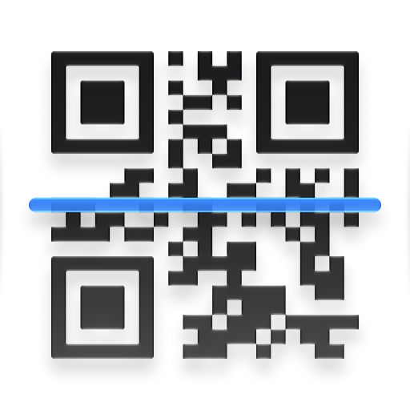
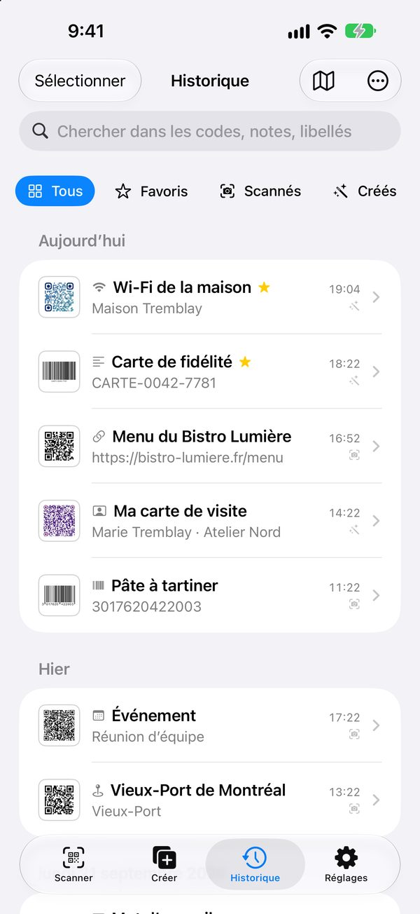
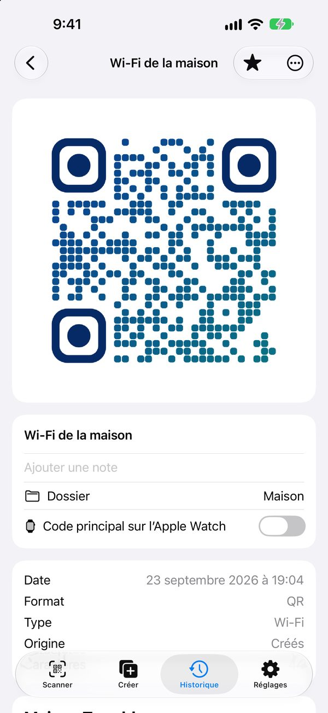
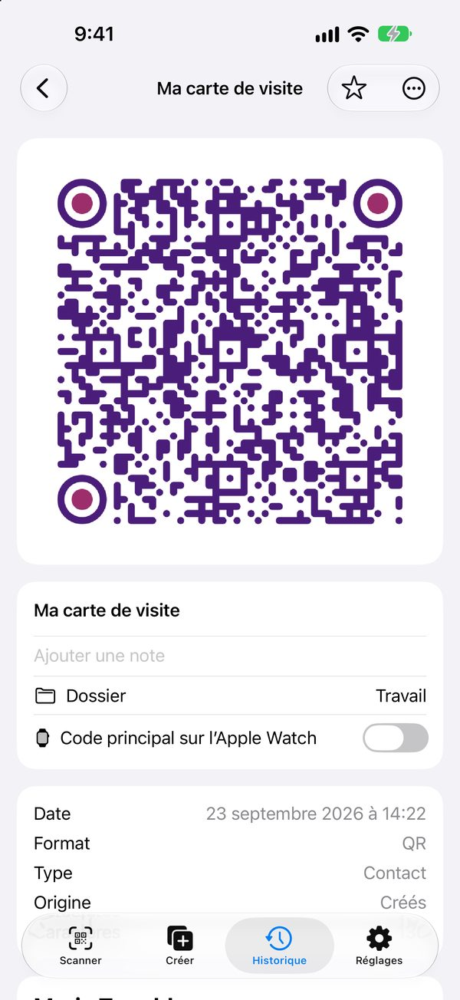
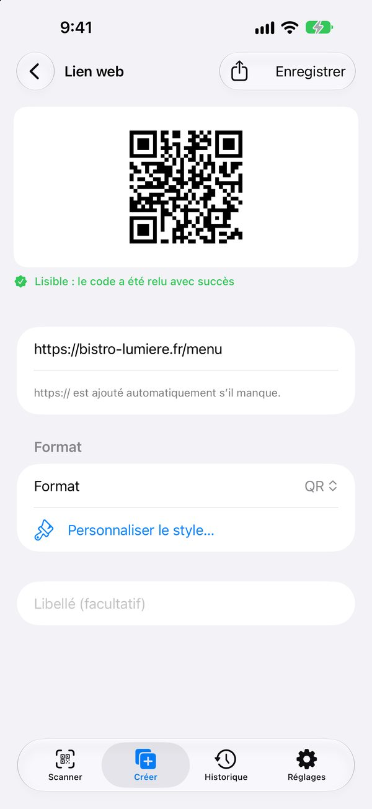
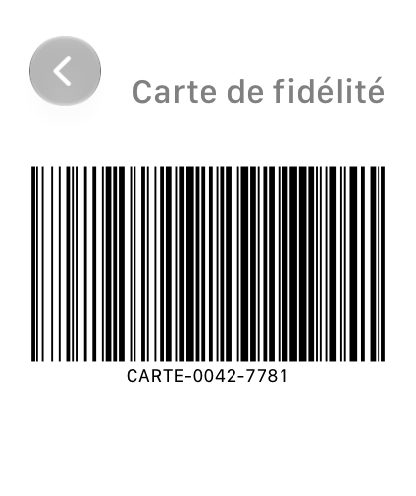
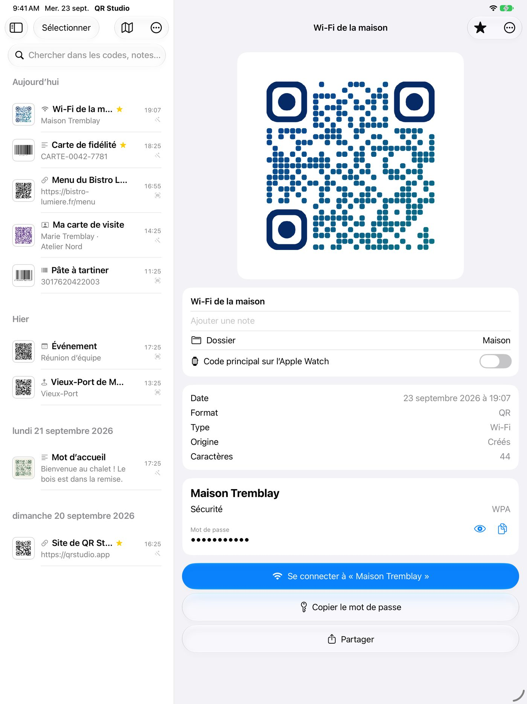

iPhone · iPad · Mac · Apple Watch
Pointez. C'est scanné.
QR Studio lit tous les codes du quotidien dès qu'ils entrent dans le champ, sans bouton ni photo, et vous aide à créer les vôtres à votre image. Tout reste sur vos appareils.
Gratuit · aucun achat intégré · aucune publicité · aucun compte
Un scanner qui comprend ce qu'il lit
Le contenu du code décide des actions proposées : pas de chaîne de caractères brute, mais une fiche claire et le bon bouton.
Wi-Fi en un geste
Le code du restaurant ou de la maison connecte l'iPhone directement, sans taper le mot de passe.
Produits
EAN, UPC et GS1 Digital Link : nom du produit, pays d'enregistrement, somme de contrôle et recherche sur vos sites.
Liens vérifiés
Le domaine s'affiche en grand, les caractères trompeurs et les liens raccourcis sont signalés, avec Google Safe Browsing en option.
Mode lot
Pour les inventaires : les codes s'empilent avec leur quantité, puis s'exportent en CSV vers Numbers ou Excel.




Créer des codes à votre image
13 types de contenu, sans jamais écrire de syntaxe : lien, texte, Wi-Fi, carte de visite, événement, lieu, courriel, SMS, téléphone, réseau social, cryptomonnaie, code-barres produit.
- Couleurs et dégradés : unis, linéaires ou radiaux, fond transparent possible.
- Formes : modules carrés, arrondis, ronds, en losange ou liés ; yeux personnalisés séparément.
- Logo et cadre : une image ou un symbole au centre, une légende comme « Scannez-moi ».
- Toujours lisible : contraste vérifié, correction d'erreur ajustée, et relecture automatique du code avant de le proposer.
- Export : PNG, JPEG, PDF vectoriel et SVG jusqu'à 2048 pixels, ou une planche PDF de plusieurs codes.
Votre carte de fidélité au poignet
L'Apple Watch affiche vos codes favoris en plein écran, même sans l'iPhone à proximité. Une complication ouvre directement votre code principal.
- Codes-barres d'origine : une carte en Code 128 ou EAN reste dans son format, pour que la caisse la lise.
- Codes denses : au-delà de ce qu'un écran de montre peut afficher, un avertissement plutôt qu'un code illisible.

Sur iPad et sur Mac
Une barre latérale de dossiers, la liste au centre, le code à droite. Sur Mac, glissez une image pour la lire, et un code vers le Finder pour l'exporter.

Partout dans votre appareil
QR Studio répond aussi quand l'app est fermée.
Siri et Raccourcis
« Montre mon code Wi-Fi dans QR Studio », « Crée un QR avec QR Studio », « Quel était mon dernier scan ».
L'iPhone, lecteur du Mac
Chaque code scanné arrive sur le Mac appairé : dans le presse-papier, dans une liste, ou tapé directement dans votre tableur.
Apple Intelligence
Libellés et dossiers suggérés, recherche en langage naturel, explication d'un lien suspect. Tout est calculé sur l'appareil.
Widgets et partage
Widgets, Spotlight, Intelligence visuelle, extension de partage et action dans Photos pour lire un code sans ouvrir l'app.
Rien ne sort de chez vous
Aucune donnée n'est collectée par le développeur. Il n'existe aucun serveur.
Vos codes restent sur vos appareils et dans votre iCloud privé. Les seules connexions réseau sont celles que vous choisissez :
ouvrir un lien, afficher un aperçu, vérifier un lien avec Google Safe Browsing (option désactivée par défaut).
Pas de publicité, pas d'analytique, aucun compte à créer.
Lire la politique de confidentialité